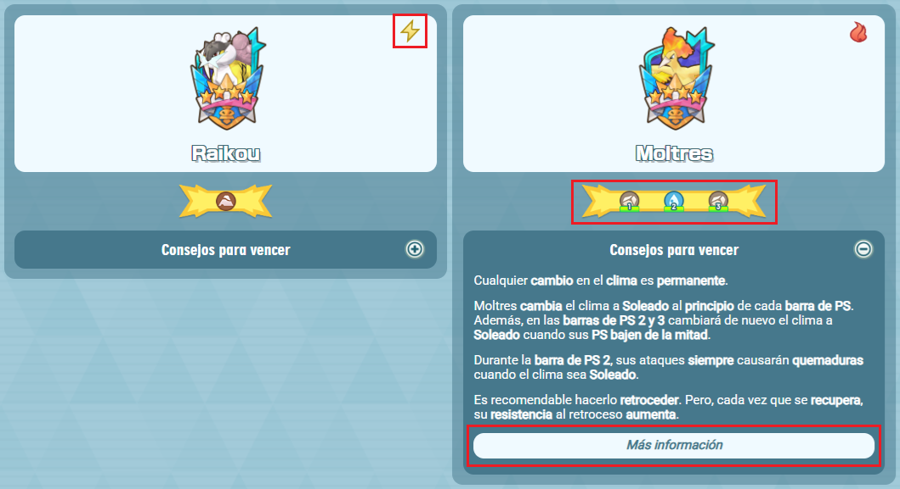
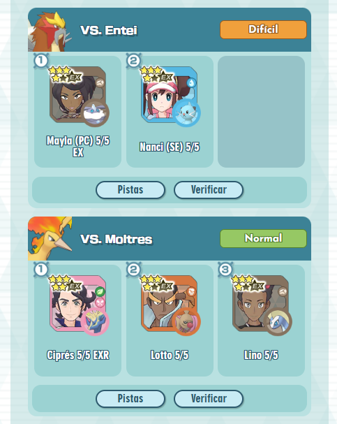
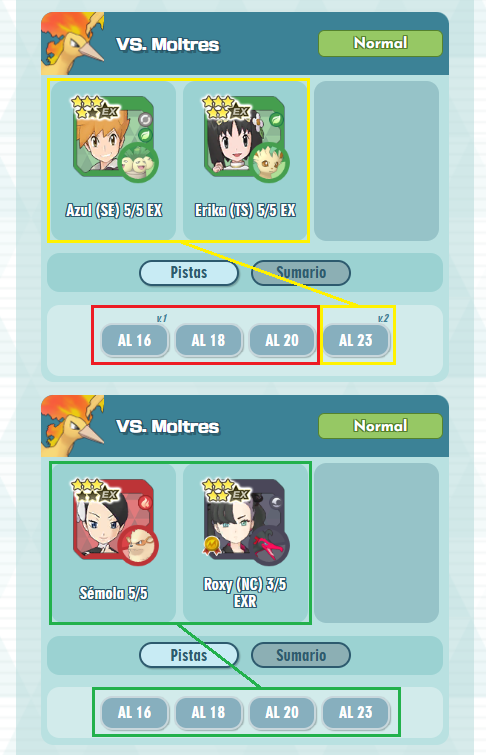
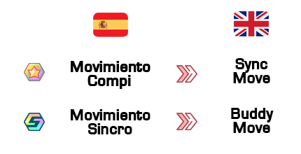

1. ¿Puedes explicar la información del panel de los Pokémon oponentes?
¡Claro! Guiémonos con la siguiente imagen:

En primer lugar, el icono que hay en la esquina superior derecha de cada Pokémon representa el tipo de este. Por lo tanto, el movimiento compi del Pokémon será de dicho tipo. En el caso de Raikou, será de tipo Eléctrico. Esto no quiere decir que el Pokémon solo sepa movimientos del tipo señalado (por ejemplo, Raikou puede usar Ataque Rápido, un movimiento de tipo Normal.)
Lo siguiente es la banda de tipos que aparece debajo de cada Pokémon. Estos representan el tipo al que es débil el Pokémon legendario. Ahora bien, hay casos como el que señalo en Moltres donde la debilidad cambia en cada barra de PS: débil al tipo Roca en las barras de PS 1 y 3 y débil al tipo Agua en la barra de PS 2. En el caso de Pokémon como Raikou que solo aparece un tipo es porque el Pokémon es débil al mismo tipo durante todo el combate.
Por último, al desplegar los consejos para vencer, al final de cada Pokémon hay un botón de Más información. Estos llevan a una hoja de cálculo que recoge toda la información del Pokémon: desde sus habilidades pasivas hasta el orden en el que usan sus movimientos. Si bien los consejos que doy para vencer son lo primordial para superar el combate, el documento adjunto puede resultar útil en muchas ocasiones. Recomiendo echarle un vistazo siempre que sea posible.
2. ¿Cómo categorizas los niveles de dificultad?
He clasificado cada combate en 5 posibles niveles de dificultad en función de lo siguiente:
El combate no supone problemas y puede hacerse al primer intento (sin contar posibles reinicios en caso de ser necesario recuperar PM).
El combate es viable y no debe ser demasiado complicado. Sin embargo, puede haber factores de mala suerte que compliquen el combate.
El combate puede necesitar de varios intentos hasta que se logre superar.
El combate requiere muchos intentos y dependes de la suerte para que vaya bien.
Dependes completamente de la suerte hasta tal punto de que necesitas todo a tu favor para que el combate vaya bien. Un mínimo fallo de cálculo y se acabó. Por lo tanto, requiere de muchos reinicios e intentos.
La dependencia de la suerte de la que hablo puede referirse a recuperar múltiples veces PM un movimiento (sobre todo aquellos que otorguen curación o un uso adicional de un clima), lograr retroceder, dormir o congelar al oponente de forma consecutiva impidiendo que te ataque o reducir las caractériscas necesarias en aquellos Pokémon que lo requieran.
3. ¿Los compis se colocan en un orden de ataque?
Sí. En el caso de los solo-battle no hay mucho que explicar. A partir de los dúos o los tríos, el orden de los compis se disponen tal y como se ven de izquierda a derecha. Es decir: el compi más a la izquierda es el primer objetivo y el que está más a la derecha es el último. Puedes verlo más claro en esta imagen:

4. Y en el caso de las páginas de los Pokémon legendarios, ¿cuál es el orden de los combates?
Los combates están ordenados primero por número de compis utilizados: solos, dúos y tríos. Dentro de cada uno se agrupan por orden de dificultad, de Normal a Superexperto. A partir de ahí, se ordenan conforme los he ido utilizando en cada aventura legendaria.
5. ¿Cómo funciona el sumario de combates de los Pokémon Legendarios?
Como bien su nombre indica, representa todas las aventuras legendarias en las que he utilizado dicho equipo. Cada botón lleva directamente a la aventura legendaria y a su combate correspondiente.
Sin embargo, estos combates cuentan con una distinción de versiones. Cada vez que se ha producido una mejora en el equipo entre diferentes aventuras legendarias, se marca como una nueva versión. Todos los cambios reflejados cuentan: aumento de repeticiones, potencial EX, rol EX, incremento de energía del tablero compi, cambios en el tablero compi y cambios de habilidades fortuitas.
Ahora fíjate en la siguiente imagen:

En el rectángulo rojo, la Aventura Legendaria 16 se indica como la versión 1. Y, en el rectángulo amarillo, en la Aventura Legendaria 23, se indica como la versión 2. Las Aventuras Legendarias 18 y 20, junto a la Aventura Legendaria 16 que se encuentran en el mismo rectángulo rojo, son, por extensión, la versión 1. Si una aventura legendaria no tiene indicación pero es posterior a otra que sí la tiene es porque dichos combates pertenecen a la misma versión y, por consiguiente, no hay cambios.
En cuanto al rectángulo amarillo que también encierra al equipo y sus compis es porque, en la página de los Pokémon legendarios, el equipo más reciente es el que prevalece. En el caso de Azul (SE) y Erika (TS), al pulsar en sus tableros, accederás a la versión más actual (en el caso de la imagen de ejemplo, la versión 2). Puedes acceder a las anteriores versiones a través de los enlaces previos por si tu equipo no tiene las mejoras de la versión más actual pero sí puedes utilizar otra versión más antigua. Ten encuenta que las diferentes versiones pueden tener entre sí diferentes niveles de dificultad.
Por último, si observas el rectángulo verde donde aparecen cuatro enlaces a diferentes aventuras legendarias pero no se indica ninguna versión es porque no ha habido ningún cambio en todos esos combates. Así pues, los enlaces de cada aventura legendaria y la de los tableros de Sémola y Roxy (NC) que aparecen en la página del Pokémon legendario son todos los mismos.
6. ¿Dondé están recogidos los datos de las primeras 15 aventuras legendarias?
Lamentablemente no los hay. Empecé a registrar los datos a partir de la Aventura Legendaria 16 en adelante. Así que espero que los datos actuales y futuros puedan resultar útiles.
7. ¿Utilizas algún recurso para los combates que realizas?
Sí, de hecho tomo como referencia a muchos jugadores que también comparten sus combates.
El primero es la documentación de solo-battles, una hoja de cálculo que explica detalladamente una lista de combates con un solo compi haciendo frente una aventura legendaria. En mi caso, procuro elegir los combates más sencillos.
Por otro lado, también echo un vistazo a varios canales de YouTube de personas que graban sus aventuras legendarias. Podréis verlos en el documento que enlacé previamente, pero cabe mencionar aquellos cuyo contenido me ayudan más:
8. ¿Solo se encuentra en idioma español?
Sí. Al principio hice esta recopilación de combates por mi cuenta, así que no tenía planeado publicarlo. De hecho, en muchas de las explicaciones uso un lenguaje bastante coloquial ya que utilizaba el registro como un diario personal.
Sintiéndolo mucho, no tengo intención de hacer una versión inglesa. Confío en que la traducción automática de los navegadores junto a los tableros adjuntos gracias a las webs de PoMaTools, Brybry y PoMastersTools sean suficiente para todos los públicos.
Un apunte para los angloparlantes: cuidado con los conceptos de Movimiento Compi (S-Move) y Movimiento Sincro (B-Move). Al parecer, estos conceptos están a la inversa en inglés. Para que no se traduzca la explicación, lo mostraré con la siguiente imagen:

9. En caso de más dudas, ¿tienes algún contacto?
¡Claro! Y puedo atender tanto es español como en inglés. Puedes contactarme por los siguientes medios:
- Reddit: u/TeratypeDilatas
- Bluesky: @teratipodilatas.bsky.social
- Discord: teratipo_dilatas / Alux#2469